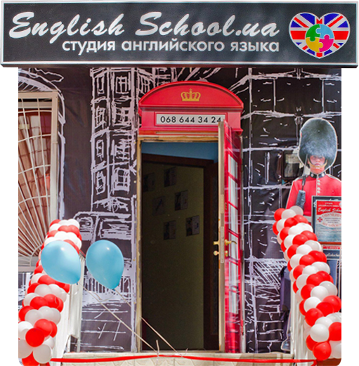

Студия «English School.ua» обучает английскому языку:

дошкольников
школьников
взрослых
Это является основным направлением деятельности студии. Наша студия отличается своим профессиональным и индивидуальным подходом к делу. Студия английского языка «English School.ua» одна из первых в процессе обучения стала применять современное оборудование и передовые технологии. Специальное интерактивное оборудование (интерактивная доска, интерактивный проектор) устанавливается в каждом учебном классе. Интерактивное оборудование поможет превратить изучение английского языка в увлекательный и познавательный процесс. К тому же обучение проходит более эффективно. Результаты не заставят себя долго ждать!
